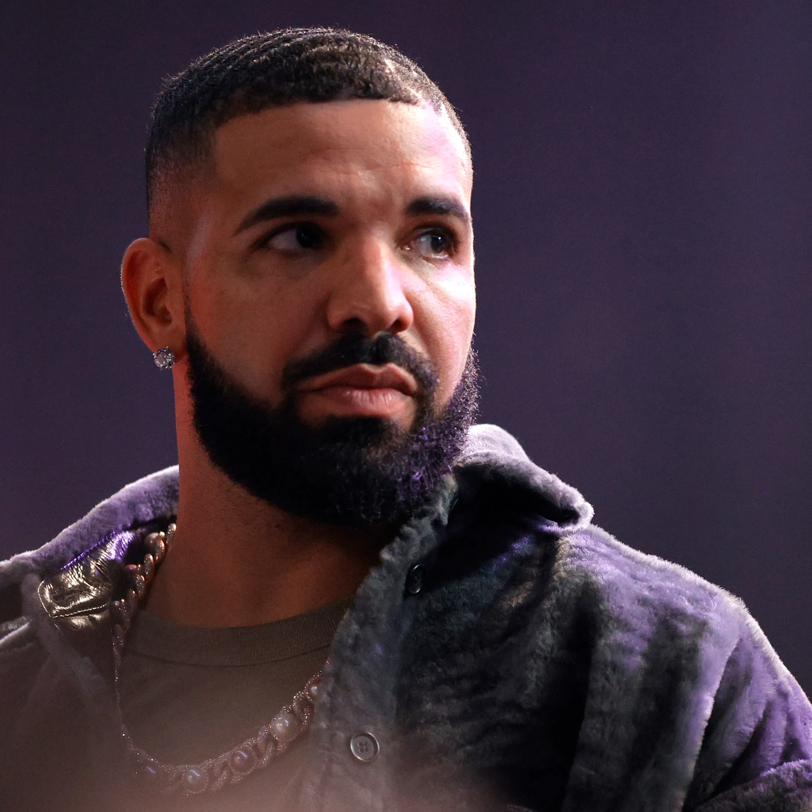

Canadian rapper and vocalist Drake has retained a bigger-than-life
commercial presence shortly after he hit the scene in 2006,
whether with his own chart-topping releases or with a long string
of guest appearances on hits by the likes of Lil Wayne, Rihanna,
and A$AP Rocky. Thanks to his introspective rap style, his
sensitive R&B crooning, and his golden touch with songwriting,
each one of his albums -- from 2011's Take Care to 2018's
trap-influenced Scorpion -- topped charts worldwide, and singles
like the Grammy-winning "Hotline Bling" and many of his mixtapes
did too. As his star rose, he helped others along, sponsoring 's
early work, starting the label, and giving features on his records
to up-and-coming acts. By the second decade of his career, Drake's
constant chart domination, his Grammy wins and nominations, and
his meme-worthy cultural presence made him one of the world's most
popular musicians, and the release of albums like 2022's Honestly,
Nevermind and 2023's For All the Dogs became cultural events. A
heavily publicized feud with in 2024 yielded a string of diss
tracks, including "Push-Ups" and "Family Matters," both of which
hit the Top Ten of the Hot 100.